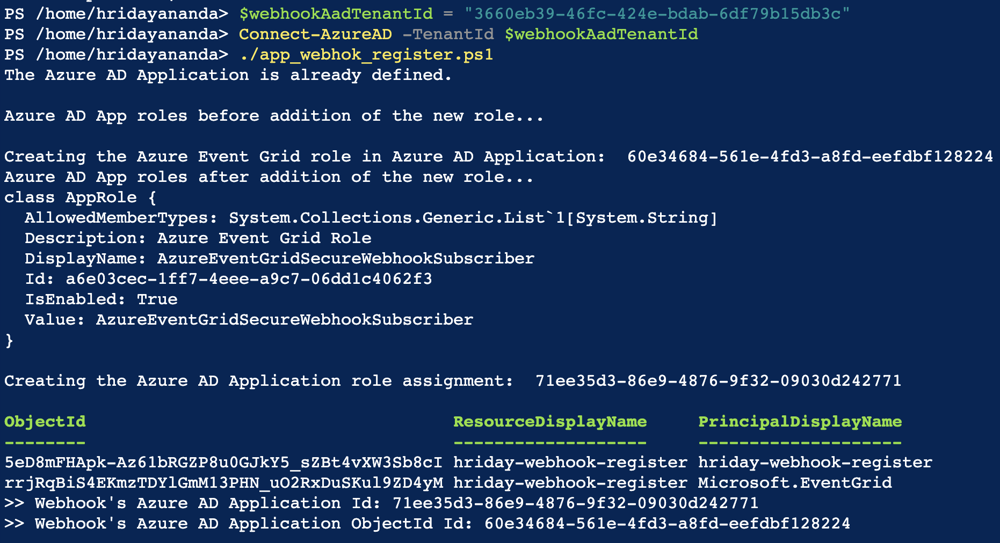
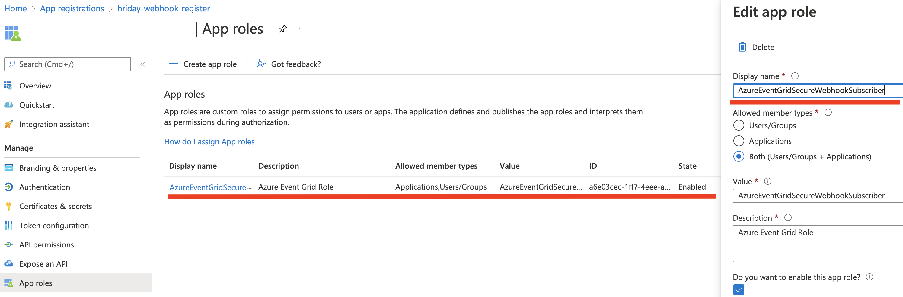

Step 2/4: Configure an Azure AD Application for Data Protection
To configure Azure for Blob Storage for DLP scanning and Threat Protection (Malware scanning), you must log in to the Azure portal as a subscription owner or global administrator and configure the following tasks:
Create an Azure AD Application
To create an Azure AD application, follow the steps below:
Log in to portal.azure.com.
Navigate to All services > Identity > Azure Active Directory.
Click App registrations.

Click + New registration and enter the following details:
Name: Enter the name of the application.
Supported account types: Keep the default selection to Accounts in this organizational directory only.
Redirect URL (optional): Leave this blank.

Click Register.
For additional information, refer to the Microsoft Azure documentation located here.
Get the Application ID and Directory ID
After registering the Azure AD application, the page redirects you to the Azure AD application Overview page. Note down the Application (client) ID and Directory (tenant) ID.
Note
These values will be required when you set up the Azure application instance in the Netskope UI.
Create the AzureEventGridSecureWebhookSubscriber role
Create the predefined Azure role, AzureEventGridSecureWebhookSubscriber to allow the validation of JWT tokens against the Netskope instance. The role makes use of the Azure AD credentials from the application you created in step 1 to validate the JWT tokens.
To create the AzureEventGridSecureWebhookSubscriber role,
Copy the
azure_webhook_role.ps1script locally.# NOTE: Before run this script ensure you are logged in Azure by using "az login" command. $webhookAppObjectId = "[REPLACE_WITH_YOUR_ID]" $eventSubscriptionWriterAppId = "[REPLACE_WITH_YOUR_APPLICATION_ID]" # Start execution try { # Creates an application role of given name and description Function CreateAppRole([string] $Name, [string] $Description) { $appRole = New-Object Microsoft.Open.AzureAD.Model.AppRole $appRole.AllowedMemberTypes = New-Object System.Collections.Generic.List[string] $appRole.AllowedMemberTypes.Add("Application"); $appRole.AllowedMemberTypes.Add("User"); $appRole.DisplayName = $Name $appRole.Id = New-Guid $appRole.IsEnabled = $true $appRole.Description = $Description $appRole.Value = $Name; return $appRole } # Creates Azure Event Grid Azure AD Application if not exists $eventGridAppId = "4962773b-9cdb-44cf-a8bf-237846a00ab7" # You don't need to modify this id $eventGridRoleName = "AzureEventGridSecureWebhookSubscriber" # You don't need to modify this role name $eventGridSP = Get-AzureADServicePrincipal -Filter ("appId eq '" + $eventGridAppId + "'") if ($eventGridSP -match "Microsoft.EventGrid") { Write-Host "The Azure AD Application is already defined.`n" } else { Write-Host "Creating the Azure Event Grid Azure AD Application" $eventGridSP = New-AzureADServicePrincipal -AppId $eventGridAppId } # Creates the Azure app role for the webhook Azure AD application $app = Get-AzureADApplication -ObjectId $webhookAppObjectId $appRoles = $app.AppRoles Write-Host "Azure AD App roles before addition of the new role..." Write-Host $appRoles if ($appRoles -match $eventGridRoleName) { Write-Host "The Azure Event Grid role is already defined.`n" } else { Write-Host "Creating the Azure Event Grid role in Azure AD Application: " $webhookAppObjectId $newRole = CreateAppRole -Name $eventGridRoleName -Description "Azure Event Grid Role" $appRoles.Add($newRole) Set-AzureADApplication -ObjectId $app.ObjectId -AppRoles $appRoles } Write-Host "Azure AD App roles after addition of the new role..." Write-Host $appRoles # Creates the user role assignment for the app that will create event subscription $servicePrincipal = Get-AzureADServicePrincipal -Filter ("appId eq '" + $app.AppId + "'") $eventSubscriptionWriterSP = Get-AzureADServicePrincipal -Filter ("appId eq '" + $eventSubscriptionWriterAppId + "'") if ($null -eq $eventSubscriptionWriterSP) { Write-Host "Create new Azure AD Application" $eventSubscriptionWriterSP = New-AzureADServicePrincipal -AppId $eventSubscriptionWriterAppId } try { Write-Host "Creating the Azure AD Application role assignment: " $eventSubscriptionWriterAppId $eventGridAppRole = $app.AppRoles | Where-Object -Property "DisplayName" -eq -Value $eventGridRoleName New-AzureADServiceAppRoleAssignment -Id $eventGridAppRole.Id -ResourceId $servicePrincipal.ObjectId -ObjectId $eventSubscriptionWriterSP.ObjectId -PrincipalId $eventSubscriptionWriterSP.ObjectId } catch { if( $_.Exception.Message -like '*Permission being assigned already exists on the object*') { Write-Host "The Azure AD Application role is already defined.`n" } else { Write-Error $_.Exception.Message } Break } # Creates the service app role assignment for Event Grid Azure AD Application $eventGridAppRole = $app.AppRoles | Where-Object -Property "DisplayName" -eq -Value $eventGridRoleName New-AzureADServiceAppRoleAssignment -Id $eventGridAppRole.Id -ResourceId $servicePrincipal.ObjectId -ObjectId $eventGridSP.ObjectId -PrincipalId $eventGridSP.ObjectId # Print output references for backup Write-Host ">> Webhook's Azure AD Application Id: $($app.AppId)" Write-Host ">> Webhook's Azure AD Application ObjectId Id: $($app.ObjectId)" } catch { Write-Host ">> Exception:" Write-Host $_ Write-Host ">> StackTrace:" Write-Host $_.ScriptStackTrace }Log into the Azure portal. You must login with Azure AD Application Administrator role or be an owner of the service principal of the Webhook app in Azure AD. These are standard Roles defined by Azure.
To learn more: https://docs.microsoft.com/en-us/azure/active-directory/roles/permissions-reference#all-roles
On the left navigation bar of the Azure portal, click the Cloud Shell button and select PowerShell.
Using the Azure PowerShell, open
azure_webhook_role.ps1and update the following parameters in the script.$webhookAppObjectId = "REPLACE_WITH_OBJECT_ID_OF_APPLICATION" $eventSubscriptionWriterAppId = "[REPLACE_WITH_YOUR_APPLICATION_ID]" Refer to Get the Application ID and Directory ID $webhookAadTenantId = "REPLACE_WITH_YOUR_TENANT_ID"
Enter the following commands to connect the Azure AD account with the tenant ID and run the script,
azure_webhook_role.ps1.Connect-AzureAD -TenantId $webhookAadTenantId ./azure_webhook_role.ps1
You can view the
AzureEventGridSecureWebhookSubscriberrole in the Azure app registrations page. The role is enabled by default.
Get the Authentication Key
To get the authentication key, follow the steps below:
On the left navigation bar of the Azure AD application page, click Certificates & secrets.
Under Client secrets, click + New client secret and enter the following details:
Description: Provide a description of the key.
Expires: Set a duration for the key.
Click Add.

After you save the configuration changes, under Client secrets, the right-most column contains the authentication key. Copy the key value.

Important
Ensure that you copy the key value as it is not accessible once you leave this page. The key value will be required when you set up the Azure application instance in the Netskope UI.
For additional information, refer to the Microsoft Azure documentation located here.
Assign a Role to the Azure AD Application
To assign a role, follow the steps below:
Log in to portal.azure.com.
Navigate to All services > General > Subscriptions.

On the Subscriptions page, click the appropriate subscription from the list.
If you want to set up multiple subscriptions, group them under a Management Group and assign a role at the Management Group. When you add a new subscription to the management group, Netskope will automatically detect the subscription and perform scans as per your configuration.
Click Access control (IAM).
Click + Add > Add role assignment.

Assign the roles and permissions specified in Step 3/4: Assign Azure Permissions for Data Protection.
For additional information, refer to the Microsoft Azure documentation located here.